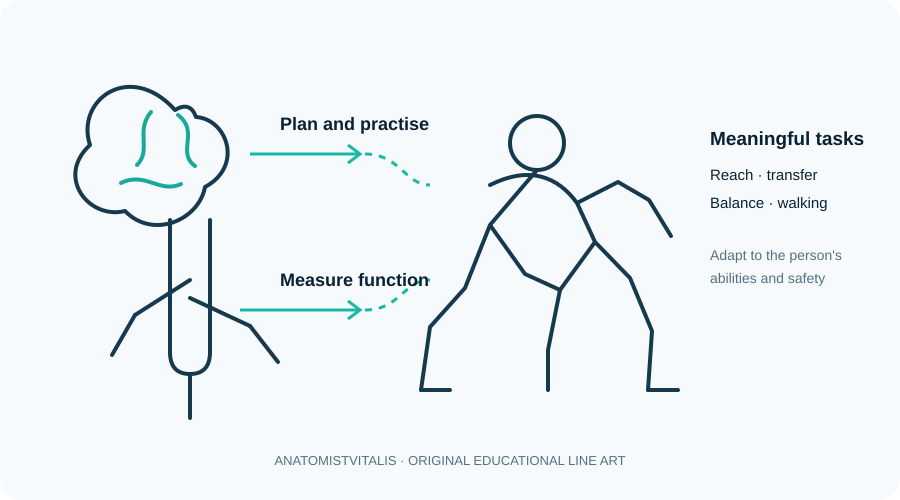

Neurological rehabilitation: movement and task-specific practice
Explore rehabilitation principles for neurological conditions, including motor learning, task practice and safety.

Introduction
Neurological rehabilitation supports people whose movement, balance, sensation, coordination, communication or daily function is affected by conditions of the brain, spinal cord, peripheral nerves or neuromuscular system. Goals vary with the diagnosis, lesion, stage of recovery, fatigue, cognition, support network and the person's priorities.
Assessment and goal setting
Assessment may examine strength, tone, selective movement, sensation, coordination, balance, gait, transfers, upper-limb use, endurance, cognition-related factors and ability to perform daily activities. Choose validated measures that fit the person's needs, and consider falls risk, skin integrity, pain, fatigue, swallowing or respiratory concerns when relevant.
Goals should be meaningful and measurable, for example transferring with less assistance or walking a specified distance with an appropriate aid. Progress is reviewed against baseline function, not simply the appearance of an isolated movement.
Principles of intervention
- Task-specific practice: practise relevant activities such as reaching, sit-to-stand, transfers or walking when safe.
- Repetition and feedback: provide enough appropriately challenging practice and useful feedback to support learning.
- Strength, balance and endurance: train capacities that limit function, adapted to the person's condition.
- Compensation and adaptation: use aids, environmental changes or alternative strategies when these improve safety and participation.
- Teamwork: coordinate with medical, nursing, occupational therapy, speech and language therapy and other professionals as needed.
Safety and individualisation
Monitor fatigue, falls risk, cardiovascular tolerance, pain, skin and joint protection, and any condition-specific precautions. Sudden new weakness, facial droop, speech disturbance, acute severe headache or other possible stroke signs require emergency medical action, not a routine rehabilitation session.
Clinical connection
Following stroke, a person may practise repeated sit-to-stand transfers with appropriate support, then progress the task as control and endurance permit. The plan should account for neglect, sensation, cognition, cardiovascular status, home environment and the person's own goals.
Further study
Use this lesson as a foundation and consult current professional guidance, validated assessment resources and relevant research for clinical decisions. Clinical practice must follow local professional standards and individual patient needs.
Check your understanding
- Why should neurological rehabilitation focus on meaningful tasks?
Reveal answer
Task-specific practice helps target the activities the person needs to regain or adapt, and supports transfer to daily life.
- What is one reason to assess both impairment and participation?
Reveal answer
A change in strength or tone does not automatically predict the person's ability to perform everyday activities or participate in their community.
- Why must neurological rehabilitation be individualised?
Reveal answer
Lesion site, severity, cognition, sensation, fatigue, comorbidities, environment and personal goals vary substantially.
Learning objectives
- Explain how neurological impairment, activity limitation and participation restriction differ.
- Describe how motor control, sensation, balance, cognition, communication and fatigue can influence rehabilitation goals.
- Relate functional assessment findings to individualised, measurable goals and appropriate intervention planning.
- Recognise clinical changes that require medical reassessment and understand the need for interprofessional care.
Clinical reasoning and safety
Rehabilitation should be person-centred, task-specific and adapted to the cause, stage and severity of neurological disease. Sudden new weakness, facial asymmetry, speech disturbance, severe new headache, seizure, altered consciousness or acute deterioration requires urgent medical assessment rather than routine rehabilitation.
Further reading
World Physiotherapy and NICE provide professional resources and condition-specific guidance.